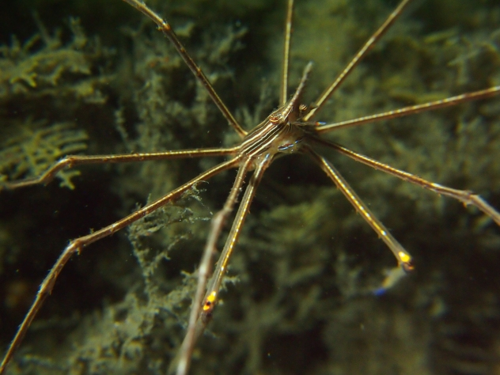
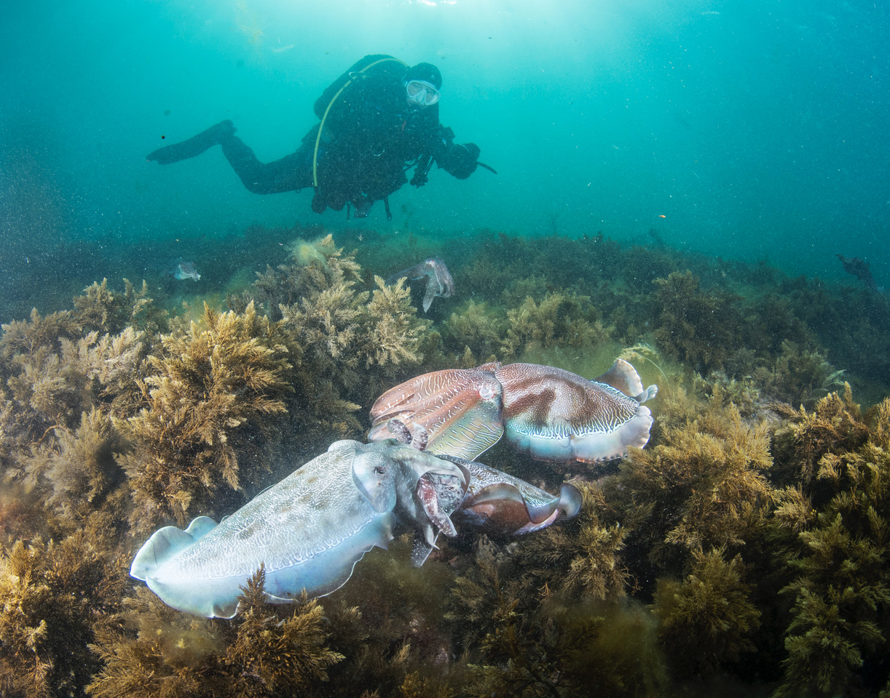
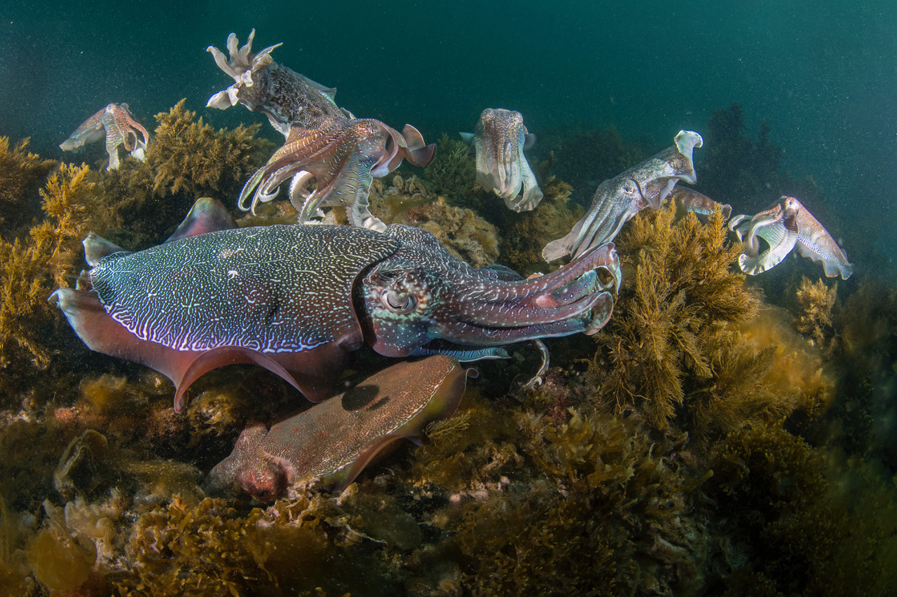
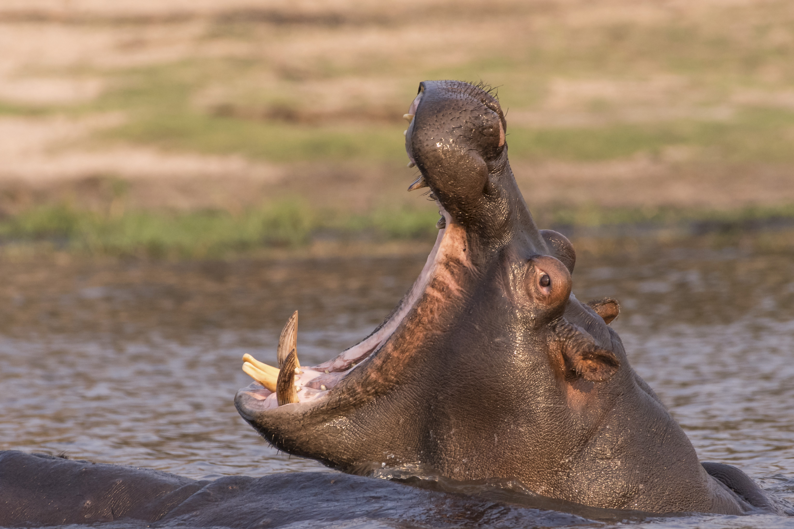
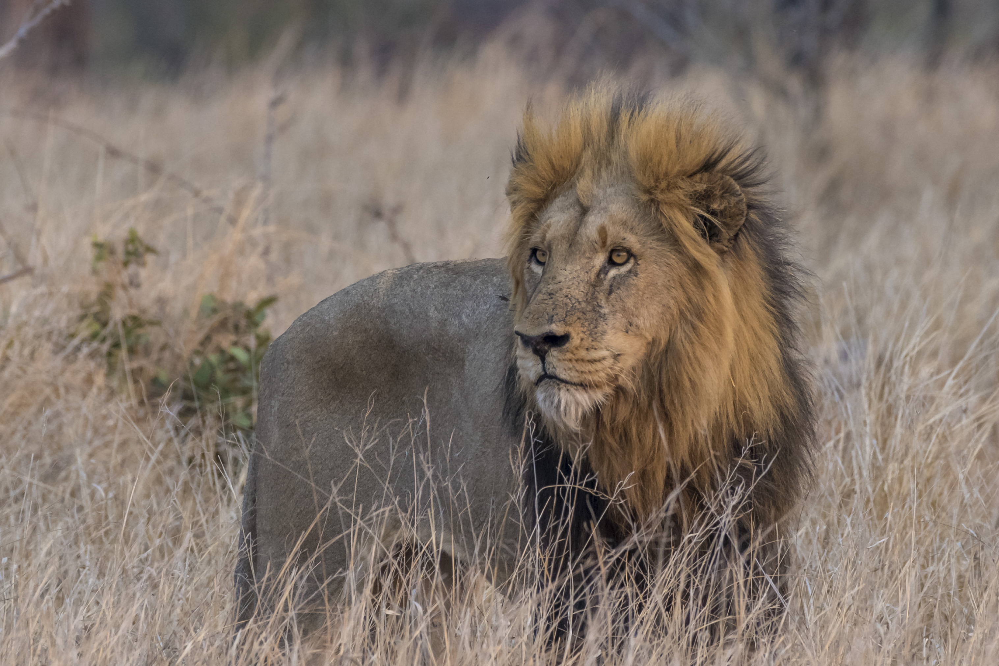

patowmack divers
Ed will show pictures from under the Blue Herron Bridge, West Palm Beach, FL. Blue Herron is one of the great shore dives. With a maximum depth of around 20 feet, your bottom time is usually over an hour. Blue Herron has a tremendous variety of critters, and Ed will feature on macro (small) ones and include larger fish.
|  |  |
Gloria will show pictures of cuttlefish from a recent trip.
 |
 |  |
We will meet one week later than usual on July 10 instead of July 3 so members can enjoy the July 4 holiday. Larry, Paul and Eric will talk about and show slides from their February trip to Playa del Coco, Costa Rica.
 |
 |
 |
Our meeting will be at Mylo's (see below for directions).
Mike will show some pictures from his photo safari in Africa. He spent a month in South Africa including Kruger Park, Botswana, and Zimbabwa.
|  |  |
 |
Our meeting will be at Mylo's (see below for directions).
Volunteers from ReefSave will talk about their work trying to remove invasive lionfish. They have develop some interesting traps that they deploy in deep water.
 |
 |
We will also discuss future club dive trips, including one to the Solomon Islands, home of Guadacanal.
Back to our usual first Wednesday of the month meeting date.Our meeting will be at Mylo's (see below for directions).
Oren will show pictures and discuss a recent dive trip to the Bahamas on the Sea Dragon.
 |
We will also discuss future club dive trips, including one to the Solomon Islands, home of Guadacanal.
Note the special meeting date, the second Wednesday of January.Our meeting will be at Mylo's (see below for directions).
Club members will show pictures and talk about their dive trip to St. Croix in 2018. The US Virgin Islands are overlooked frequently as a dive location.

 Follow us on Facebook!
or email us at "dive at patowmackdivers.com" replace at with @
Follow us on Facebook!
or email us at "dive at patowmackdivers.com" replace at with @
Copyright (c) 2011-2023 Patowmack Divers.com. All rights reserved.